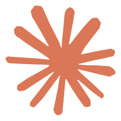

现状：一个 CLI 会话都没有时，窗口里什么都不画 —— 一块空毛玻璃方块。用户看到它的第一反应是
「是不是挂了」，而不是「现在没在跑」。而且空态出现的频率不低：开机后、跑完收工后、只在写文档的下午，
屏幕上都挂着这块空窗。
空态时的窗口尺寸按实测口径渲染：只有 agent 启用时是 45×45（方形 / 横条 / 竖条都一样，
agent 需求恒 ≥1 格）、贴角 90×45、与待办同级时整窗 135×45
（agent 占 1/3）。下面每套都给了这四种场景，1:1 真实尺寸 + 3× 放大。
模板里 v-for 遍历会话、溢出格又在 overflow > 0 时才渲染，所以零会话 = 零节点，
只剩外壳那层毛玻璃。斜纹是「什么也没有」的标注，真实窗口里就是一块干净的玻璃。
方形 / 横条 / 竖条 45×451:1
贴角 90×451:1
与待办并存 135×45左侧 1/3 = agent 槽
| 方案 | 它在说什么 | 45×45 可读性 | 动效 | 与并存模块的关系 | 风险 |
|---|---|---|---|---|---|
| A · 待机暗灯 | 「设备开着，但没有任务」——和现有灯点是同一个圆，只是空心 + 变暗 | ★★★★★ | 无 | 暗、小、空心：不会和待办的彩色数字抢注意力 | 可能被误读成「灰色的灯」（需要一点描边对比度兜底） |
| B · 幽影平台标 | 「这块窗是 Claude / Codex 的状态灯」——回答「这是谁的窗」 | ★★★ | 无 | 两个 logo 在 1/3 槽里会偏挤；待办在旁边显得更花 | 低不透明度下 logo 细节糊成一团灰；品牌色损失 |
| C · 呼吸暗点 | 「活着，在等 agent」——靠极慢的明暗变化表示在线 | ★★★★ | 有（4.5s） | 常驻悬浮窗上一直动，久看容易分神 | 与「绿=执行中」的闪烁语言可能打架（用户会问「这个点为什么在闪」） |
| D · 待机文字 | 「待机」——把状态说成字，最不容易误读 | ★★★ | 无 | 中文两字在 1/3 槽里偏窄，字号只能 9px 上下 | 小字在毛玻璃上对比度吃紧；与「一个窗只放灯」的极简气质有点冲突 |
正中一个 10px 的空心圆（1.5px 描边、白 26%），不改现有灯点的尺寸语言 —— 亮起来是实心彩点， 闲下来就是同一个圆的空心版，像设备的待机指示灯。零动效、零小字，39px 里也一眼看得清「窗还活着」。
方形 / 横条 / 竖条 45×451:1
贴角 90×451:1
与待办并存 135×45虚线仅示槽位
方形 3× 放大
两个平台 logo 降到 38% 并去色，像水印一样并排居中。好处是把「这块窗是给 Claude / Codex 的」
写进画面；代价是 logo 缩到 13px、再去色之后，细节基本糊成一团灰，品牌色也没了
（想让品牌色透出来就去掉 grayscale，把不透明度提到 40% 上下）。


方形 45×451:1
贴角 90×451:1
与待办并存 135×45左边两个 logo 挤在 43px 里
方形 3× 放大
一个 7px 的灰点，4.5 秒一次极慢的明暗呼吸（16% ↔ 42%）。它想表达「在线，在等 agent」，
和「绿闪 = 刚做完一轮」是两种时间尺度。⚠️ 风险也在这：悬浮窗是常驻的，一直有东西在动容易分神，
而且用户可能把它读成「有活儿在跑」。本页已按 prefers-reduced-motion 做了静态兜底。
方形 45×451:1
贴角 90×451:1
与待办并存 135×45
方形 3× 放大
直接写两个字「待机」（9.5px、次文本色、字距放开一点）。四个方案里它最不容易被误读 —— 不用猜符号、不用猜图标；代价是这块窗从此有了小字，和「一个窗只放灯」的极简气质有点冲突， 而且 9px 的中文在毛玻璃上对比度吃紧（真要做建议提到 10px 并加一点字重）。
方形 45×451:1
贴角 90×451:1
与待办并存 135×45
方形 3× 放大
配色沿用 src/assets/main.css 的 token，未新增色值；A / B / D 零动效，C 带
prefers-reduced-motion 兜底。
两件与「美观」无关但要先定的事：① 空态下 agent 仍占 ≥1 格（规范明确禁止 demand 返回 0），
所以「让它彻底消失、把窗口让给待办」不是这四个方案能解决的，需要单独改口径；
② 悬停空态时信息卡怎么办 —— 现在零会话也没有可悬停的节点，要么不响应，要么像 A / D 那样
给一句「当前没有 CLI 会话在运行」（可以顺带说明怎么启动）。